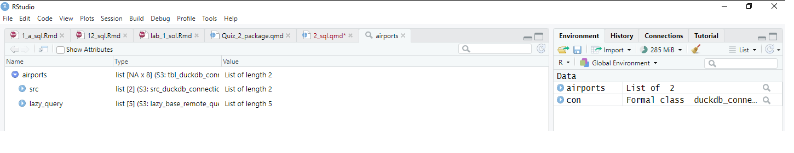

{ “course”: “DATA613”, “level”: “Graduate”, “credit”: 3 }
SQL A Quick Introduction
Introduction
DATABASE
- There are mainly two type of database
Relational:
Tables in relational database resemble Excel spreadsheets (Rows and Columns). Tables in relational database can have relation to each others and it is done by the conceptkeys.Non-Relational: Data can be organized in any format but not a table (non-tabular form, and tends to be more flexible than SQL-based) like JSON files (It is a collection of key-value pairs where the key must be a string type, and the value can be of any of the following types: Number, String.)
Example of some simple JSON data
To utilize data in a relational database we use SQL and for non-relational we use another language called NOSQL (Not Only SQL). NOSQL databases use JSON (JavaScript Object Notation), XML, YAML, or binary schema, facilitating unstructured data. Our focus here is on SQL!
SQL
SQL is a database query language - a language designed specifically for interacting with a database. It offers syntax for extracting data, updating data, replacing data, creating data, etc. For our purposes, it will typically be used when accessing data off a server database. If the database isn’t too large, you can grab the entire data set and stick it in a data.frame. However, often the data are quite large so you interact with it piecemeal via SQL.
SQL is how you download this subset. You choose which data frames (“tables” in SQL) to download, what subsets of these tables to download (by filtering rows), and whether to join tables together in this process.
SQL allows you to do a lot that {dplr} does. It is industry standard for interacting with a relational database.
One of the nice advantage of SQL is, you do not need to export data from the database into a file and then load it into R. And have to redo it again each time the data is updated. With SQL, we can get our code directly and get the most recent data straight out of the database.
To work with relational database system we need special software known as a DataBase Management System (DBMS). It is a workspace for us to write SQL statement. There are different DBMS that you can use. For instance
MYSQL
Microsoft SQL Server
Oracle
Postgres SQL
and may more.
The method of connecting with each database may differ, but they support SQL (specifically they support ANSI SQL). If you get familiar with one of these DBMS then transition from one server to another is not very hard.
We will use R Studio in this lesson. But if you get really into SQL, a popular IDE is DBeaver , with a tutorial from DuckDB here .
SQL for Database Management
A DBMS (Database Management System) is software that allows users to efficiently store, manage, and query data in databases. Important ones include MySQL, PostgreSQL, SQL Server, Oracle, and SQLite.
DBMS tools are software applications used to manage and interact with databases. Important ones include DBeaver, MySQL, ,and Oracle SQL Developer.
Database Management Focus: DBM tools are specifically designed for database management tasks, such as:
Structuring and managing data.
Writing and testing SQL queries.
Performing tasks like joining tables, filtering, and data manipulation directly within the database, rather than relying on R’s code-based approach.
What is DBeaver?
DBeaver is an open-source, cross-platform database management tool designed for working with SQL databases and NoSQL databases.
It provides a graphical interface to interact with databases, making it easy to manage and explore data, run SQL queries, and generate ER diagrams to visualize database structure.
DBeaver supports a wide range of databases and provides tools for SQL editing, query execution, data browsing, schema management, and database administration.
It’s an ideal tool for both beginners learning SQL and advanced users working with complex databases.
SQL In R
Note: In this class we learn
Interface SQL with R through the
{DBI}package.Write SQL code using the tidyverse and the
{dbplyr}package.
Install and Load necessary packages
{DBI} Package
The first package we load is {DBI}, it is the basic database infrastructure. It let’s R to talk to lots of different kind of dadtabases and perform required tasks.
{DBI} – Acts as a bridge between R and databases, providing a consistent way to connect and send queries.
{DBI} lets R talk to DuckDB.
library(DBI){duckdb}:
It tells {DBI} package translate between R and database. There are other related packages for translating between R and other database management system like {duckdb} or {RSQLite}.
{duckdb} – A fast, in-memory database that processes SQL queries efficiently without requiring an external database server.
{duckdb} executes SQL queries efficiently.
library(duckdb){dbplyr}:
If we want to interact with database directly using {dplyr} we need to load {dbplyr} (database plyr package). That will allow {dplyr} and databases to interact by using the package {DBI}.
{dplyr} – Allows users to manipulate data using R functions instead of writing raw SQL, making database operations easier.
{dplyr} enables SQL-like operations in R without writing SQL directly.
An overview example showing how {dplyr} allows you to perform SQL queries.
Scenario:
Suppose you have a data.frame in R with sales data, and you want to:
Filter rows where the sales are greater than $100.
Group the data by
region.Calculate the average sales per region.
When you’re working with a database connection, {dplyr} automatically detects that you’re using a database and translates its functions (like filter(), group_by(), etc.) into SQL queries instead of running them in-memory as it would with a local data.frame.
Here’s how the connection and detection process works:
- Set up the connection with {DBI} and {duckdb}:
# Connect to DuckDB (this creates an in-memory database)
dbcon <- dbConnect(duckdb::duckdb())
dbcon<duckdb_connection f9b90 driver=<duckdb_driver dbdir=':memory:' read_only=FALSE bigint=numeric>>- Create a table in DuckDB (optional, if you want to work with an actual database table):
# Sample data frame
sales_data <- data.frame(
region = c("North", "South", "East", "West", "North", "South"),
sales = c(150, 120, 90, 200, 300, 80)
)dim(sales_data)[1] 6 2glimpse(sales_data)Rows: 6
Columns: 2
$ region <chr> "North", "South", "East", "West", "North", "South"
$ sales <dbl> 150, 120, 90, 200, 300, 80# Copy the data into DuckDB
dbWriteTable(dbcon, "sales", sales_data)# Check if the connection is established
dbIsValid(dbcon)[1] TRUE- Use {dplyr} to query the database:
# Now use dplyr to interact with the database
result <- tbl(dbcon, "sales") %>%
filter(sales > 100) %>%
group_by(region) %>%
summarise(avg_sales = mean(sales)) # Show the result
print(result)Warning: Missing values are always removed in SQL aggregation functions.
Use `na.rm = TRUE` to silence this warning
This warning is displayed once every 8 hours.# Source: SQL [?? x 2]
# Database: DuckDB v1.3.1 [semiyari@Windows 10 x64:R 4.5.2/:memory:]
region avg_sales
<chr> <dbl>
1 North 225
2 West 200
3 South 120dim(result)[1] NA 2What happens behind the scenes:
The
tbl()function tells {dplyr} to treat the"sales"table as a database object (not a localdata.frame).Once {dplyr} detects the connection (
dbcon), it automatically knows you’re working with a database and will translate thefilter(),group_by(), andsummarise()operations into the appropriate SQL commands instead of running them in R.
For instance, the query for the above operation would look something like this in SQL: SQL
SELECT region, AVG(sales) AS avg_sales
FROM sales
WHERE sales > 100
GROUP BY region| region | avg_sales |
|---|---|
| North | 225 |
| West | 200 |
| South | 120 |
How does {dplyr} know?
The
tbl()function is the key. When you provide a database connection as an argument, {dplyr} recognizes that it should interact with the database and generate SQL queries.If you were using a local
data.frame, it would just run the operations in R, not SQL.
So, {dplyr} translates your R code to SQL under the hood when it detects that you’re working with a database connection.
Closing the connection
We are done with this example so we need to close the connection.
# Close the previous connection if it is open
if (dbIsValid(dbcon)) {
dbDisconnect(dbcon)
cat("Previous connection closed.")
} else {
cat("No active connection to close.")
}Previous connection closed.Another Example:
Connecting using {duckdb}
Let’s download a duck database from: https://data-science-master.github.io/lectures/data/flights.duckdb
<mark style="background-color: lightblue">R</mark># Download the DuckDB file from the provided URL
url <- "https://data-science-master.github.io/lectures/data/flights.duckdb"
download.file(url, destfile = "./data/flights.duckdb", mode = "wb")The first argument is the driver from {duckdb} that helps translate between R and the database. The driver is loaded using the
duckdb()function.The second argument is the path to our database file.
R
conn <- dbConnect(duckdb(), "../data/flights.duckdb", read_only = TRUE)Check the Connection
If you look at the “environment pane” you will see the “Formal class duckdb_connect…” This means we have connected to this database.
To check if the connection is closed use the
dbIsValid()function in R. This function returns TRUE if the connection is valid (open) and FALSE if it is closed.R
dbIsValid(conn)[1] TRUEBasic Operations:
Once we connected to database we can look at it to see what is going on by using
dbListTables(), where the argument is the connection object we made. It will shows the tables we have in this database. The warning message says when finishing with your work you must disconnect.R
dbListTables(conn)[1] "airlines" "airports" "flights" "planes" "weather" We also can find out the details of the individual tables by
dbListFields(), where the first argument is the connection we made and the seconf wrapped in qutation is the name of the table that we are interested inR
dbListFields(conn, "flights") [1] "year" "month" "day" "dep_time"
[5] "sched_dep_time" "dep_delay" "arr_time" "sched_arr_time"
[9] "arr_delay" "carrier" "flight" "tailnum"
[13] "origin" "dest" "air_time" "distance"
[17] "hour" "minute" "time_hour" <mark style="background-color: lightblue">R</mark> dbListFields(conn, "planes")[1] "tailnum" "year" "type" "manufacturer" "model"
[6] "engines" "seats" "speed" "engine" <mark style="background-color: lightblue">R</mark> dbListFields(conn, "airports")[1] "faa" "name" "lat" "lon" "alt" "tz" "dst" "tzone"In addition to looking at a table in a dataframe we can also make direct connections to those individual tables and we can do that using
tbl()from {dplyr}.Let’s assume we want to make a connect link to “airports” table via
tbl()from{dplyr}R
tbl(conn, "airports") -> airports
airports# Source: table<airports> [?? x 8]
# Database: DuckDB v1.3.1 [semiyari@Windows 10 x64:R 4.5.2/C:\Users\semiyari\Desktop\ds_spring26\data\flights.duckdb]
faa name lat lon alt tz dst tzone
<chr> <chr> <dbl> <dbl> <dbl> <dbl> <chr> <chr>
1 04G Lansdowne Airport 41.1 -80.6 1044 -5 A America/…
2 06A Moton Field Municipal Airport 32.5 -85.7 264 -6 A America/…
3 06C Schaumburg Regional 42.0 -88.1 801 -6 A America/…
4 06N Randall Airport 41.4 -74.4 523 -5 A America/…
5 09J Jekyll Island Airport 31.1 -81.4 11 -5 A America/…
6 0A9 Elizabethton Municipal Airport 36.4 -82.2 1593 -5 A America/…
7 0G6 Williams County Airport 41.5 -84.5 730 -5 A America/…
8 0G7 Finger Lakes Regional Airport 42.9 -76.8 492 -5 A America/…
9 0P2 Shoestring Aviation Airfield 39.8 -76.6 1000 -5 U America/…
10 0S9 Jefferson County Intl 48.1 -123. 108 -8 A America/…
# ℹ more rows- if you look at the the output you will see the number of rows is unknown.
airports %>%
nrow()[1] NAYou will see something like
[??,8]which indicates??rows and8columns. This is because R does not have the entire table. it only knows the first 10 rows as you can see from the output of the previous command.However, if you click the “airports” objects in the “environment” pane you will see some confusing output.

View(airports)If we want to bring this table to R we need to use collect() function
airports |>
collect() ->
df_airports
df_airports# A tibble: 1,458 × 8
faa name lat lon alt tz dst tzone
<chr> <chr> <dbl> <dbl> <dbl> <dbl> <chr> <chr>
1 04G Lansdowne Airport 41.1 -80.6 1044 -5 A America/…
2 06A Moton Field Municipal Airport 32.5 -85.7 264 -6 A America/…
3 06C Schaumburg Regional 42.0 -88.1 801 -6 A America/…
4 06N Randall Airport 41.4 -74.4 523 -5 A America/…
5 09J Jekyll Island Airport 31.1 -81.4 11 -5 A America/…
6 0A9 Elizabethton Municipal Airport 36.4 -82.2 1593 -5 A America/…
7 0G6 Williams County Airport 41.5 -84.5 730 -5 A America/…
8 0G7 Finger Lakes Regional Airport 42.9 -76.8 492 -5 A America/…
9 0P2 Shoestring Aviation Airfield 39.8 -76.6 1000 -5 U America/…
10 0S9 Jefferson County Intl 48.1 -123. 108 -8 A America/…
# ℹ 1,448 more rowsNow, if you click on df_airports in the ‘Environment’ pane, you will see exactly what you would expect from read_csv(), including a ‘$’ sign followed by the variable name, the type of the variables, and more.
View(df_airports)Running SQL From R
We can interact with the data in a database that we ’ve made a connection to.
We want to learn how to write queries in
SQL. If we want to interact with a database from R based on those queries, we start by writing the query as a string.Therefore, the query must be enclosed in quotation marks.
A basic SQL code chunk looks like this (put SQL code between the chunks):
```{sql, connection=conn}
```- By convention, SQL syntax is written in all UPPER CASE and variable names/database names are written in lower case.
Select Specific Columns
As you can see, the following query:
"SELECT tzone, name
FROM airports"[1] "SELECT tzone, name\n FROM airports"is inside quotation marks in the above chunk of code.
There are three ways to run this query
1. dbGetQuery() From DBI
Use the function
dbGetQuery()from {DBI} package.Now let us run
dbGetQuery()functionR
"SELECT tzone, name
FROM airports" %>%
dbGetQuery(conn, .) ->
tz_name
head(tz_name) tzone name
1 America/New_York Lansdowne Airport
2 America/Chicago Moton Field Municipal Airport
3 America/Chicago Schaumburg Regional
4 America/New_York Randall Airport
5 America/New_York Jekyll Island Airport
6 America/New_York Elizabethton Municipal AirportAs you can see, the query is inside quotation marks.
It will get run in database, select the two columns that we have requested from the table we have provided. So this is actually a dataframe that was passed back to R and if we store it , then it will be ready when we need it.
R
nrow(tz_name)[1] 1458R
names(tz_name)[1] "tzone" "name" R
tz_name %>%
head() tzone name
1 America/New_York Lansdowne Airport
2 America/Chicago Moton Field Municipal Airport
3 America/Chicago Schaumburg Regional
4 America/New_York Randall Airport
5 America/New_York Jekyll Island Airport
6 America/New_York Elizabethton Municipal Airport2. tbl() From dplyr
(i) with sql() function
We can use
tbl()from {dplyr}R
"SELECT tzone, name
FROM airports" %>%
sql() %>%
tbl(conn, .) # Source: SQL [?? x 2]
# Database: DuckDB v1.3.1 [semiyari@Windows 10 x64:R 4.5.2/C:\Users\semiyari\Desktop\ds_spring26\data\flights.duckdb]
tzone name
<chr> <chr>
1 America/New_York Lansdowne Airport
2 America/Chicago Moton Field Municipal Airport
3 America/Chicago Schaumburg Regional
4 America/New_York Randall Airport
5 America/New_York Jekyll Island Airport
6 America/New_York Elizabethton Municipal Airport
7 America/New_York Williams County Airport
8 America/New_York Finger Lakes Regional Airport
9 America/New_York Shoestring Aviation Airfield
10 America/Los_Angeles Jefferson County Intl
# ℹ more rowsAs you can see, the query is inside quotation marks.
- This will create a table similar to one we had with
dbGetQuery(). The difference is thedbGetQuery()returns a dataframe back to R.tbl()function actually leaves the result table still in the database. And we can see it R does not know how many rows there. on the top of the table you will see something similar to
Source:SQL [?? x 2]
Which implies R does not know the entire the table, it only knows the first 10 rows.
If we want to get the result of that query back to R we need to use collect() function
R
"SELECT tzone, name
FROM airports" %>%
sql() %>%
tbl(conn, .) %>%
collect()# A tibble: 1,458 × 2
tzone name
<chr> <chr>
1 America/New_York Lansdowne Airport
2 America/Chicago Moton Field Municipal Airport
3 America/Chicago Schaumburg Regional
4 America/New_York Randall Airport
5 America/New_York Jekyll Island Airport
6 America/New_York Elizabethton Municipal Airport
7 America/New_York Williams County Airport
8 America/New_York Finger Lakes Regional Airport
9 America/New_York Shoestring Aviation Airfield
10 America/Los_Angeles Jefferson County Intl
# ℹ 1,448 more rowsNow it will return the data as a datafram into R.
(ii) with dplyr's functions
R
tbl(conn, "airports") %>%
select(tzone, name) %>%
collect()# A tibble: 1,458 × 2
tzone name
<chr> <chr>
1 America/New_York Lansdowne Airport
2 America/Chicago Moton Field Municipal Airport
3 America/Chicago Schaumburg Regional
4 America/New_York Randall Airport
5 America/New_York Jekyll Island Airport
6 America/New_York Elizabethton Municipal Airport
7 America/New_York Williams County Airport
8 America/New_York Finger Lakes Regional Airport
9 America/New_York Shoestring Aviation Airfield
10 America/Los_Angeles Jefferson County Intl
# ℹ 1,448 more rowsOnce {dplyr} detects the connection (conn), it automatically knows you’re working with a database and will translate the filter(), group_by(), and summarise() operations into the appropriate SQL commands instead of running them in R.
3. Use Language SQL within chunk code
We can use he curly braces
{}to denote code chunks. Within these code chunks, you can specify the language of the code using the syntax{sql, connection=conn}indicates a SQL code chunk with additional parameters, such as specifying a connection object (conn in this case).
General
Case does not matter (i.e.
selectis the same asSELECTis the same asSeLeCt), but it is standard to have all statements be in UPPERCASE (i.e.SELECT).The statements below must be in the following order:
SELECT,FROM,WHERE,GROUP BY,ORDER BY.New lines and white space don’t matter. But it is common to put those five commands above on new lines.
Character values must be in single quotes.
You can use invalid variable names by putting them in double quotes (same as using backticks in R).
- Some folks always use double quotes because it is not always clear what is an invalid variable name in the database management system.
Comments in SQL have two hyphens
--.Make sure to put a semicolon
;at the end of a SQL statement. This will allow you to have multiple SQL queries in one chunk.
Showing Tables
The
SHOW TABLEScommand can be used to get a list of all of the tablesSQL
SHOW TABLEs;| name |
|---|
| airlines |
| airports |
| flights |
| planes |
| weather |
The
DESCRIBEcommand can be used to show tables and the variables.SQL
DESCRIBE;| database | schema | name | column_names | column_types | temporary |
|---|---|---|---|---|---|
| flights | main | airlines | carrier, name | VARCHAR, VARCHAR | FALSE |
| flights | main | airports | faa , name , lat , lon , alt , tz , dst , tzone | VARCHAR, VARCHAR, DOUBLE , DOUBLE , DOUBLE , DOUBLE , VARCHAR, VARCHAR | FALSE |
| flights | main | flights | year , month , day , dep_time , sched_dep_time, dep_delay , arr_time , sched_arr_time, arr_delay , carrier , flight , tailnum , origin , dest , air_time , distance , hour , minute , time_hour | INTEGER , INTEGER , INTEGER , INTEGER , INTEGER , DOUBLE , INTEGER , INTEGER , DOUBLE , VARCHAR , INTEGER , VARCHAR , VARCHAR , VARCHAR , DOUBLE , DOUBLE , DOUBLE , DOUBLE , TIMESTAMP | FALSE |
| flights | main | planes | tailnum , year , type , manufacturer, model , engines , seats , speed , engine | VARCHAR, INTEGER, VARCHAR, VARCHAR, VARCHAR, INTEGER, INTEGER, INTEGER, VARCHAR | FALSE |
| flights | main | weather | origin , year , month , day , hour , temp , dewp , humid , wind_dir , wind_speed, wind_gust , precip , pressure , visib , time_hour | VARCHAR , INTEGER , INTEGER , INTEGER , INTEGER , DOUBLE , DOUBLE , DOUBLE , DOUBLE , DOUBLE , DOUBLE , DOUBLE , DOUBLE , DOUBLE , TIMESTAMP | FALSE |
<mark style="background-color: #e24e2f">SQL</mark> DESCRIBE airports;| column_name | column_type | null | key | default | extra |
|---|---|---|---|---|---|
| faa | VARCHAR | YES | NA | NA | NA |
| name | VARCHAR | YES | NA | NA | NA |
| lat | DOUBLE | YES | NA | NA | NA |
| lon | DOUBLE | YES | NA | NA | NA |
| alt | DOUBLE | YES | NA | NA | NA |
| tz | DOUBLE | YES | NA | NA | NA |
| dst | VARCHAR | YES | NA | NA | NA |
| tzone | VARCHAR | YES | NA | NA | NA |
Select Specific Columns
To get the columns from a data frame, use the
SELECTcommand.The syntax is like this
SQL
SELECT <column1>, <column2>, <column3>
FROM <mytable>;Let’s use this to get the
tzone, andnamevariables from theairportstable.SQL
SELECT "tzone", "name"
FROM "airports"| tzone | name |
|---|---|
| America/New_York | Lansdowne Airport |
| America/Chicago | Moton Field Municipal Airport |
| America/Chicago | Schaumburg Regional |
| America/New_York | Randall Airport |
| America/New_York | Jekyll Island Airport |
| America/New_York | Elizabethton Municipal Airport |
| America/New_York | Williams County Airport |
| America/New_York | Finger Lakes Regional Airport |
| America/New_York | Shoestring Aviation Airfield |
| America/Los_Angeles | Jefferson County Intl |
In SQL, queries are not placed within quotation marks when written directly.
However, SQL requires invalid variable names to be enclosed in quotation marks. Some folks always use double quotes because it is not always clear what is an invalid variable name in the database management system (DBMS).
Additionally, character string values in SQL must be enclosed in single quotation marks ('), not double quotation marks (").
In R, the # symbol is used to indicate comments, whereas in SQL, comments can be defined using -- for single-line comments.
SQL
-- names are valid so can be written without quotation marks
SELECT tzone, name
FROM airports| tzone | name |
|---|---|
| America/New_York | Lansdowne Airport |
| America/Chicago | Moton Field Municipal Airport |
| America/Chicago | Schaumburg Regional |
| America/New_York | Randall Airport |
| America/New_York | Jekyll Island Airport |
| America/New_York | Elizabethton Municipal Airport |
| America/New_York | Williams County Airport |
| America/New_York | Finger Lakes Regional Airport |
| America/New_York | Shoestring Aviation Airfield |
| America/Los_Angeles | Jefferson County Intl |
We select every column by using
*(Wild card):SQL
SELECT *
FROM airports;| faa | name | lat | lon | alt | tz | dst | tzone |
|---|---|---|---|---|---|---|---|
| 04G | Lansdowne Airport | 41.13047 | -80.61958 | 1044 | -5 | A | America/New_York |
| 06A | Moton Field Municipal Airport | 32.46057 | -85.68003 | 264 | -6 | A | America/Chicago |
| 06C | Schaumburg Regional | 41.98934 | -88.10124 | 801 | -6 | A | America/Chicago |
| 06N | Randall Airport | 41.43191 | -74.39156 | 523 | -5 | A | America/New_York |
| 09J | Jekyll Island Airport | 31.07447 | -81.42778 | 11 | -5 | A | America/New_York |
| 0A9 | Elizabethton Municipal Airport | 36.37122 | -82.17342 | 1593 | -5 | A | America/New_York |
| 0G6 | Williams County Airport | 41.46731 | -84.50678 | 730 | -5 | A | America/New_York |
| 0G7 | Finger Lakes Regional Airport | 42.88356 | -76.78123 | 492 | -5 | A | America/New_York |
| 0P2 | Shoestring Aviation Airfield | 39.79482 | -76.64719 | 1000 | -5 | U | America/New_York |
| 0S9 | Jefferson County Intl | 48.05381 | -122.81064 | 108 | -8 | A | America/Los_Angeles |
Filter rows
R
dbListFields(conn, "flights") [1] "year" "month" "day" "dep_time"
[5] "sched_dep_time" "dep_delay" "arr_time" "sched_arr_time"
[9] "arr_delay" "carrier" "flight" "tailnum"
[13] "origin" "dest" "air_time" "distance"
[17] "hour" "minute" "time_hour" You use the
WHEREcommand in SQL to filter by rows.SQL
SELECT "flight", "distance", "origin", "dest"
FROM flights
WHERE "distance" < 50;| flight | distance | origin | dest |
|---|---|---|---|
| 1632 | 17 | EWR | LGA |
R
"SELECT flight, distance, origin, dest
FROM flights" %>%
dbGetQuery(conn, .) %>%
head() flight distance origin dest
1 1545 1400 EWR IAH
2 1714 1416 LGA IAH
3 1141 1089 JFK MIA
4 725 1576 JFK BQN
5 461 762 LGA ATL
6 1696 719 EWR ORDTo test for equality, you just use one equals sign.
SQL
SELECT "flight", "month"
FROM flights
WHERE "month" = 12;| flight | month |
|---|---|
| 745 | 12 |
| 839 | 12 |
| 1895 | 12 |
| 1487 | 12 |
| 2243 | 12 |
| 939 | 12 |
| 3819 | 12 |
| 1441 | 12 |
| 2167 | 12 |
| 605 | 12 |
For characters you must use single quotes, not double.
SQL
SELECT "flight", "origin"
FROM flights
WHERE "origin" = 'JFK';| flight | origin |
|---|---|
| 1141 | JFK |
| 725 | JFK |
| 79 | JFK |
| 49 | JFK |
| 71 | JFK |
| 194 | JFK |
| 1806 | JFK |
| 1743 | JFK |
| 303 | JFK |
| 135 | JFK |
You can select multiple criteria using the
ANDcommandSQL
SELECT "flight", "origin", "dest"
FROM flights
WHERE "origin" = 'JFK' AND "dest" = 'CMH';| flight | origin | dest |
|---|---|---|
| 4146 | JFK | CMH |
| 3783 | JFK | CMH |
| 4146 | JFK | CMH |
| 3783 | JFK | CMH |
| 4146 | JFK | CMH |
| 3783 | JFK | CMH |
| 4146 | JFK | CMH |
| 3783 | JFK | CMH |
| 4146 | JFK | CMH |
| 3650 | JFK | CMH |
You can use the
ORlogical operator too. Just put parentheses around your desired order of operations.SQL
SELECT "flight", "origin", "dest"
FROM flights
WHERE ("origin" = 'JFK' OR "origin" = 'LGA') AND dest = 'CMH';| flight | origin | dest |
|---|---|---|
| 4490 | LGA | CMH |
| 4485 | LGA | CMH |
| 4426 | LGA | CMH |
| 4429 | LGA | CMH |
| 4146 | JFK | CMH |
| 4626 | LGA | CMH |
| 4555 | LGA | CMH |
| 3783 | JFK | CMH |
| 4490 | LGA | CMH |
| 4485 | LGA | CMH |
Missing data is
NULLin SQL (instead ofNA). We can remove them by the special command:SQL
SELECT "flight", "dep_delay"
FROM flights
WHERE "dep_delay" IS NOT NULL;| flight | dep_delay |
|---|---|
| 1545 | 2 |
| 1714 | 4 |
| 1141 | 2 |
| 725 | -1 |
| 461 | -6 |
| 1696 | -4 |
| 507 | -5 |
| 5708 | -3 |
| 79 | -3 |
| 301 | -2 |
Just use
ISif you want only the missing data observationsSQL
SELECT "flight", "dep_delay"
FROM flights
WHERE "dep_delay" IS NULL;| flight | dep_delay |
|---|---|
| 4308 | NA |
| 791 | NA |
| 1925 | NA |
| 125 | NA |
| 4352 | NA |
| 4406 | NA |
| 4434 | NA |
| 4935 | NA |
| 3849 | NA |
| 133 | NA |
When you are building a query, you often want to subset the rows while you are finishing it (you don’t want to return the whole table each time you are trouble shooting a query). Use
LIMITto show only the top subset.SQL
SELECT "flight", "origin", "dest"
FROM flights
LIMIT 5;| flight | origin | dest |
|---|---|---|
| 1545 | EWR | IAH |
| 1714 | LGA | IAH |
| 1141 | JFK | MIA |
| 725 | JFK | BQN |
| 461 | LGA | ATL |
- You can also randomly sample rows via
USING SAMPLE:
SQL
SELECT "flight", "origin", "dest"
FROM flights
USING SAMPLE 5 ROWS;| flight | origin | dest |
|---|---|---|
| 1186 | EWR | MIA |
| 1000 | EWR | MIA |
| 1197 | EWR | LAS |
| 1433 | LGA | CLT |
| 209 | JFK | LGB |
Arranging Rows
Use
ORDER BYto rearrange the rows (let’s remove missing values so we can see the ordering)SQL
SELECT "flight", "dep_delay"
FROM flights
WHERE "dep_delay" IS NOT NULL
ORDER BY "dep_delay";| flight | dep_delay |
|---|---|
| 97 | -43 |
| 1715 | -33 |
| 5713 | -32 |
| 1435 | -30 |
| 837 | -27 |
| 3478 | -26 |
| 4361 | -25 |
| 4573 | -25 |
| 3318 | -24 |
| 375 | -24 |
Use
DESCafter the variable to arrange in descending orderSQL
SELECT "flight", "dep_delay"
FROM flights
WHERE dep_delay IS NOT NULL
ORDER BY "dep_delay" DESC;| flight | dep_delay |
|---|---|
| 51 | 1301 |
| 3535 | 1137 |
| 3695 | 1126 |
| 177 | 1014 |
| 3075 | 1005 |
| 2391 | 960 |
| 2119 | 911 |
| 2007 | 899 |
| 2047 | 898 |
| 172 | 896 |
You break ties by adding more variables in the
ORDER BYstatementSQL
SELECT "flight", "origin", "dep_delay"
FROM "flights"
WHERE "dep_delay" IS NOT NULL
ORDER BY "origin" DESC, "dep_delay";| flight | origin | dep_delay |
|---|---|---|
| 1715 | LGA | -33 |
| 5713 | LGA | -32 |
| 1435 | LGA | -30 |
| 837 | LGA | -27 |
| 3478 | LGA | -26 |
| 4573 | LGA | -25 |
| 375 | LGA | -24 |
| 4065 | LGA | -24 |
| 2223 | LGA | -24 |
| 5956 | LGA | -23 |
Mutate
In SQL, you mutate variables while you SELECT. You use
ASto specify what the new variable is called (choosing a variable name is called “aliasing” in SQL).SQL
SELECT <expression> AS <myvariable>
FROM <mytable>;Let’s calculate average speed from the
flightstable. We’ll also keep the flight number, distance, and air time variables.SQL
SELECT "flight", "distance" / "air_time" AS "speed", "distance", "air_time"
FROM flights;| flight | speed | distance | air_time |
|---|---|---|---|
| 1545 | 6.167401 | 1400 | 227 |
| 1714 | 6.237885 | 1416 | 227 |
| 1141 | 6.806250 | 1089 | 160 |
| 725 | 8.612022 | 1576 | 183 |
| 461 | 6.568966 | 762 | 116 |
| 1696 | 4.793333 | 719 | 150 |
| 507 | 6.740506 | 1065 | 158 |
| 5708 | 4.320755 | 229 | 53 |
| 79 | 6.742857 | 944 | 140 |
| 301 | 5.311594 | 733 | 138 |
Joining
For joining, in the
SELECTcall, you write out all of the columns in both tables that you are joining.If there are shared column names, you need to distinguish between the two via
table1."var"ortable2."var"etc…Use
LEFT JOINto declare a left join, andONto declare the keys.SQL
-- Get column names for the planes table
SELECT column_name
FROM information_schema.columns
WHERE table_name = 'planes';| column_name |
|---|
| tailnum |
| year |
| type |
| manufacturer |
| model |
| engines |
| seats |
| speed |
| engine |
<mark style="background-color: lightblue">R</mark> dbListFields(conn, "planes")[1] "tailnum" "year" "type" "manufacturer" "model"
[6] "engines" "seats" "speed" "engine" <mark style="background-color: #e24e2f">SQL</mark> -- Get column names for the flights table
SELECT column_name
FROM information_schema.columns
WHERE table_name = 'flights';| column_name |
|---|
| year |
| month |
| day |
| dep_time |
| sched_dep_time |
| dep_delay |
| arr_time |
| sched_arr_time |
| arr_delay |
| carrier |
<mark style="background-color: lightblue">R</mark> dbListFields(conn, "flights") [1] "year" "month" "day" "dep_time"
[5] "sched_dep_time" "dep_delay" "arr_time" "sched_arr_time"
[9] "arr_delay" "carrier" "flight" "tailnum"
[13] "origin" "dest" "air_time" "distance"
[17] "hour" "minute" "time_hour" - Let us Join them with the key
tailnum
LEFT JOIN
<mark style="background-color: #e24e2f">SQL</mark> -- flight is from the flights table
-- type is from the planes table
-- both tables have a tailnum column, so we need to tell them apart
-- if you list both tailnums in SELECT, you'll get two tailnum columns
SELECT "flight", flights."tailnum", "type"
FROM flights
LEFT JOIN planes
ON flights."tailnum" = planes."tailnum";| flight | tailnum | type |
|---|---|---|
| 1545 | N14228 | Fixed wing multi engine |
| 1714 | N24211 | Fixed wing multi engine |
| 1141 | N619AA | Fixed wing multi engine |
| 725 | N804JB | Fixed wing multi engine |
| 461 | N668DN | Fixed wing multi engine |
| 1696 | N39463 | Fixed wing multi engine |
| 507 | N516JB | Fixed wing multi engine |
| 5708 | N829AS | Fixed wing multi engine |
| 79 | N593JB | Fixed wing multi engine |
| 49 | N793JB | Fixed wing multi engine |
RIGHT JOIN
<mark style="background-color: #e24e2f">SQL</mark>
SELECT "flight", flights."tailnum", "type"
FROM flights
RIGHT JOIN planes
ON flights."tailnum" = planes."tailnum";| flight | tailnum | type |
|---|---|---|
| 1545 | N14228 | Fixed wing multi engine |
| 1714 | N24211 | Fixed wing multi engine |
| 1141 | N619AA | Fixed wing multi engine |
| 725 | N804JB | Fixed wing multi engine |
| 461 | N668DN | Fixed wing multi engine |
| 1696 | N39463 | Fixed wing multi engine |
| 507 | N516JB | Fixed wing multi engine |
| 5708 | N829AS | Fixed wing multi engine |
| 79 | N593JB | Fixed wing multi engine |
| 49 | N793JB | Fixed wing multi engine |
FULL JOIN
<mark style="background-color: #e24e2f">SQL</mark> SELECT "flight", flights."tailnum", "type"
FROM flights
JOIN planes
ON flights."tailnum" = planes."tailnum";| flight | tailnum | type |
|---|---|---|
| 461 | N693DL | Fixed wing multi engine |
| 569 | N846UA | Fixed wing multi engine |
| 4424 | N19966 | Fixed wing multi engine |
| 6177 | N34111 | Fixed wing multi engine |
| 731 | N319NB | Fixed wing multi engine |
| 684 | N809UA | Fixed wing multi engine |
| 1279 | N328NB | Fixed wing multi engine |
| 1691 | N34137 | Fixed wing multi engine |
| 1447 | N117UW | Fixed wing multi engine |
| 583 | N632JB | Fixed wing multi engine |
<mark style="background-color: #e24e2f">SQL</mark> SELECT "flight", flights."tailnum", "type"
FROM flights
FULL JOIN planes
ON flights."tailnum" = planes."tailnum";| flight | tailnum | type |
|---|---|---|
| 461 | N693DL | Fixed wing multi engine |
| 569 | N846UA | Fixed wing multi engine |
| 4424 | N19966 | Fixed wing multi engine |
| 6177 | N34111 | Fixed wing multi engine |
| 731 | N319NB | Fixed wing multi engine |
| 684 | N809UA | Fixed wing multi engine |
| 1279 | N328NB | Fixed wing multi engine |
| 1691 | N34137 | Fixed wing multi engine |
| 1447 | N117UW | Fixed wing multi engine |
| 583 | N632JB | Fixed wing multi engine |
Lazy Evaluation in SQL
Lazy evaluation in SQL (especially when using databases like DuckDB in R) means that queries are not executed immediately but instead are deferred until needed. This improves performance by avoiding unnecessary computations and reducing memory usage.
Key Concept in R with SQL
When you use
{dplyr}withtbl(con, "table_name"), it creates a reference to the table but does not fetch data immediately.The actual SQL execution happens only when you call
collect(), which pulls the results into R as a data frame.
Example with filter() in Lazy Evaluation:
Suppose you want to filter the "airports" table to only include airports in the tzone “America/New_York”. The query won’t run until you call collect().
result <- tbl(conn, "airports") %>%
filter(tzone == "America/New_York") %>%
select(tzone, name) %>%
collect()
# View the result
head(result)# A tibble: 6 × 2
tzone name
<chr> <chr>
1 America/New_York Lansdowne Airport
2 America/New_York Randall Airport
3 America/New_York Jekyll Island Airport
4 America/New_York Elizabethton Municipal Airport
5 America/New_York Williams County Airport
6 America/New_York Finger Lakes Regional Airport Step-by-Step Breakdown:
tbl(conn, "airports")
- Creates a lazy reference to the
"airports"table in the database. No data is loaded yet.
filter(tzone == "America/New_York")
- Adds a filter condition to only include rows where the
tzoneis"America/New_York".
- The query is still not executed, it’s just being built.
select(tzone, name)
- Adds a selection to retrieve only the
tzoneandnamecolumns.
- Still, no execution happens.
collect()
- This is where the SQL query is executed.
- The query that is run on the database looks like:
SELECT tzone, name FROM airports WHERE tzone = 'America/New_York';| tzone | name |
|---|---|
| America/New_York | Lansdowne Airport |
| America/New_York | Randall Airport |
| America/New_York | Jekyll Island Airport |
| America/New_York | Elizabethton Municipal Airport |
| America/New_York | Williams County Airport |
| America/New_York | Finger Lakes Regional Airport |
| America/New_York | Shoestring Aviation Airfield |
| America/New_York | Harford County Airport |
| America/New_York | Port Bucyrus-Crawford County Airport |
| America/New_York | Jackson County Airport |
- Only the filtered data is collected and returned as a data frame in R.
Why This is Efficient:
Lazy Evaluation ensures that the data isn’t fetched or filtered until necessary, saving memory and time, especially with large datasets.
The SQL engine can optimize the query before it runs, which can improve performance.
Key Point:
Until collect() is called, the query is just a plan—no data is retrieved from the database until that point. The result is only calculated when needed, improving efficiency.
COUNT
Example: Count the number of time zones from airports table.
We want to count the number of individual flights associated with time zones.
- Select the
tzonecolumn
- count each row (
*) associated withtzone
- We get this from the
airportstable - We need to group them by
tzone
Everything must be inside of the quotation marks.
<mark style="background-color: lightblue">R</mark>count_airports <- "SELECT tzone,
COUNT(*)
From airports
GROUP BY tzone"There are three ways to run this query
1. Use the function dbGetQuery() from {DBI} package.
- Now let us run
dbGetQuery()function
count_tzone
<mark style="background-color: lightblue">R</mark>dbGetQuery(conn, count_airports) tzone count_star()
1 Pacific/Honolulu 18
2 America/Denver 119
3 America/Chicago 342
4 <NA> 3
5 America/Vancouver 2
6 Asia/Chongqing 2
7 America/Los_Angeles 176
8 America/Phoenix 38
9 America/Anchorage 239
10 America/New_York 519It will get run in database, the count for each time zone are totaled and it will get returned to R as a dataframe. So this is actually a dataframe that was passed back to R and if we store it , then it will be ready when we need it.
Or directly
R
"SELECT tzone,
COUNT(*)
From airports
GROUP BY tzone" %>%
dbGetQuery(conn, .) tzone count_star()
1 America/New_York 519
2 Pacific/Honolulu 18
3 America/Anchorage 239
4 America/Vancouver 2
5 Asia/Chongqing 2
6 America/Los_Angeles 176
7 America/Phoenix 38
8 America/Denver 119
9 America/Chicago 342
10 <NA> 32a. We can use tbl() from {dplyr} with sql()
<mark style="background-color: lightblue">R</mark>tbl(conn, sql(count_airports))# Source: SQL [?? x 2]
# Database: DuckDB v1.3.1 [semiyari@Windows 10 x64:R 4.5.2/C:\Users\semiyari\Desktop\ds_spring26\data\flights.duckdb]
tzone `count_star()`
<chr> <dbl>
1 America/Anchorage 239
2 America/Vancouver 2
3 Asia/Chongqing 2
4 America/Denver 119
5 Pacific/Honolulu 18
6 America/Los_Angeles 176
7 America/Phoenix 38
8 America/New_York 519
9 America/Chicago 342
10 <NA> 3This will create a table similar to one we had in method 1. The difference is the dbGetQuery() returns a dataframe back to R. tbl() function actually leaves the result table still in the database. And we can see it R does not know how many rows there. on the top of the table you will see something similar to
Source:SQL [?? x 2]
If we want to get the resul of that query back to R we need to use collect() function
<mark style="background-color: lightblue">R</mark>tbl(conn, sql(count_airports)) %>%
collect()# A tibble: 10 × 2
tzone `count_star()`
<chr> <dbl>
1 America/Chicago 342
2 <NA> 3
3 America/New_York 519
4 America/Denver 119
5 America/Anchorage 239
6 America/Los_Angeles 176
7 America/Phoenix 38
8 America/Vancouver 2
9 Asia/Chongqing 2
10 Pacific/Honolulu 18Now it will return the data as a datafram into R.
- We also can get it directly by
"SELECT tzone,
COUNT(*)
From airports
GROUP BY tzone" %>%
sql() %>%
tbl(conn, .) %>%
collect()# A tibble: 10 × 2
tzone `count_star()`
<chr> <dbl>
1 America/Anchorage 239
2 America/Los_Angeles 176
3 America/Phoenix 38
4 America/Vancouver 2
5 Asia/Chongqing 2
6 Pacific/Honolulu 18
7 America/Denver 119
8 America/New_York 519
9 America/Chicago 342
10 <NA> 32b. We can use tbl() from {dplyr} with its functions
If you are familiar with dplyr and not very comfortable with SQL, you may want using database connection with dplyr commands inside of the database.
Let us we want to count the time zone in flights data frame.
We start with creating a connection to an individal table ( or multiple tables) using
tbl()We create a linked version of table in R. The first argument is the connection we made and the second is the name of the table we want to connect to.
airports_table <- tbl(conn, "airports")airports_table %>%
print()# Source: table<airports> [?? x 8]
# Database: DuckDB v1.3.1 [semiyari@Windows 10 x64:R 4.5.2/C:\Users\semiyari\Desktop\ds_spring26\data\flights.duckdb]
faa name lat lon alt tz dst tzone
<chr> <chr> <dbl> <dbl> <dbl> <dbl> <chr> <chr>
1 04G Lansdowne Airport 41.1 -80.6 1044 -5 A America/…
2 06A Moton Field Municipal Airport 32.5 -85.7 264 -6 A America/…
3 06C Schaumburg Regional 42.0 -88.1 801 -6 A America/…
4 06N Randall Airport 41.4 -74.4 523 -5 A America/…
5 09J Jekyll Island Airport 31.1 -81.4 11 -5 A America/…
6 0A9 Elizabethton Municipal Airport 36.4 -82.2 1593 -5 A America/…
7 0G6 Williams County Airport 41.5 -84.5 730 -5 A America/…
8 0G7 Finger Lakes Regional Airport 42.9 -76.8 492 -5 A America/…
9 0P2 Shoestring Aviation Airfield 39.8 -76.6 1000 -5 U America/…
10 0S9 Jefferson County Intl 48.1 -123. 108 -8 A America/…
# ℹ more rowsNow we have the connection we can do exactly what we did in {dplyr}
Remember in {dplyr} we gorup by things first
airports_table %>%
group_by(tzone) %>%
summarise(count = n())# Source: SQL [?? x 2]
# Database: DuckDB v1.3.1 [semiyari@Windows 10 x64:R 4.5.2/C:\Users\semiyari\Desktop\ds_spring26\data\flights.duckdb]
tzone count
<chr> <dbl>
1 America/Anchorage 239
2 America/Denver 119
3 America/Vancouver 2
4 Asia/Chongqing 2
5 Pacific/Honolulu 18
6 America/Los_Angeles 176
7 America/Phoenix 38
8 America/Chicago 342
9 <NA> 3
10 America/New_York 519We see the same output that we had before. If you look closely at the table, you will see the number of rows are not known.
Once {dplyr} detects the connection (
conn), it automatically knows you’re working with a database and will translate thefilter(),group_by(), andsummarise()operations into the appropriate SQL commands instead of running them in R.The benefit of working in the database caused the faster performance (without using R memory) Also without knowing SQL, we just use {dplyr} functions.
As you can see the number of rows is unknown. The reason is, R just has the first few observations and it does not know how many is there. To bring back data to R we need to do one additional step , which was applying the
collect()function
airports_table %>%
group_by(tzone) %>%
summarise(count = n()) %>%
collect() -> count_tzone
count_tzone %>%
print()# A tibble: 10 × 2
tzone count
<chr> <dbl>
1 America/Anchorage 239
2 America/Los_Angeles 176
3 America/Phoenix 38
4 America/Denver 119
5 America/Chicago 342
6 <NA> 3
7 Pacific/Honolulu 18
8 America/Vancouver 2
9 Asia/Chongqing 2
10 America/New_York 519Copying data from R to the database
So far we have been reade,create data, retrieve data from database. Now we want the table that we created and add it to database. We can do this by using copy_to() function.
Suppose we want to store the table
count_tzonefrom R back to database as a permanent table.Let us look at the tables in our database just to make sure that table isn’t there.
R
dbListTables(conn)[1] "airlines" "airports" "flights" "planes" "weather" - Let’s give a name to table that we have created by SQLin R.
To store the table we use copy_to() function, where the first argument is the connection we made, the second argument is the table that we want to copy to database and the third argument is the name of the table on the database. By default table will be added temporary if you want it permanent you need to type temporary = FALSE, to store data permanently.
Now let us add the
count_tzonewhich we were created by {dbplyr} to databaseR
copy_to(conn, count_tzone, name = "zone_count", overwrite = TRUE)check to see if the table was added to database
<mark style="background-color: lightblue">R</mark>dbListTables(conn)[1] "airlines" "airports" "flights" "planes" "weather"
[6] "zone_count"tzone_cR
airports_table %>%
group_by(tzone) %>%
summarise(count = n()) %>%
collect() ->
tzone_ctzone_c %>%
print()# A tibble: 10 × 2
tzone count
<chr> <dbl>
1 America/Los_Angeles 176
2 America/Phoenix 38
3 America/Anchorage 239
4 America/New_York 519
5 America/Chicago 342
6 <NA> 3
7 America/Denver 119
8 America/Vancouver 2
9 Asia/Chongqing 2
10 Pacific/Honolulu 18Now let us add the
tzone_cwhich we were created by {dbplyr} to databaseR
copy_to(conn, tzone_c, name = "zone_t", overwrite = TRUE)check to see if the table was added to database
<mark style="background-color: lightblue">R</mark>dbListTables(conn)[1] "airlines" "airports" "flights" "planes" "weather"
[6] "zone_count" "zone_t" Remove a table from database
We can Delete table by dbRemoveTable() function from {DBI} package.
Let us remove the file we just added
R
dbRemoveTable(conn, "zone_t")check to see if the table was removed from database
<mark style="background-color: lightblue">R</mark>dbListTables(conn)[1] "airlines" "airports" "flights" "planes" "weather"
[6] "zone_count"Now we want to remove
count_tzonefrom databaseR
dbRemoveTable(conn, "zone_count")Let us to check if it was deleted
R
dbListTables(conn)[1] "airlines" "airports" "flights" "planes" "weather" <mark style="background-color: lightblue">R</mark> dbListFields(conn, "flights") [1] "year" "month" "day" "dep_time"
[5] "sched_dep_time" "dep_delay" "arr_time" "sched_arr_time"
[9] "arr_delay" "carrier" "flight" "tailnum"
[13] "origin" "dest" "air_time" "distance"
[17] "hour" "minute" "time_hour" Close the connection
<mark style="background-color: lightblue">R</mark>dbDisconnect(conn)To check if the connection is closed use the
dbIsValid()function in R. This function returns TRUE if the connection is valid (open) and FALSE if it is closed.R
dbIsValid(conn)[1] FALSEOr
R
# Close the previous connection if it is open
if (dbIsValid(conn)) {
dbDisconnect(conn)
cat("Previous connection closed.")
} else {
cat("No active connection to close.")
}No active connection to close.Or Check it as follow:
R
# Check if the connection is closed
if (!dbIsValid(conn)) {
print("Connection is closed.")
} else {
print("Connection is open.")
}[1] "Connection is closed."How about if we want to Use {RSQLite} instead of {duckdb}
<mark style="background-color: lightblue">R</mark>library(RSQLite)To collect the file go to SQLITE TUTORIAL
Scroll down to Download SQLite sample database
You get a zipfile. Double click to open it and then extract the file. I put the file
chinook.dbin my data folderR
conn_sqlite <- dbConnect(SQLite(), "./data/chinook.db", synchronous = NULL)dbIsValid(conn_sqlite)[1] TRUE- We just created the connection
In the following we will get the list of tables in our database
<mark style="background-color: lightblue">R</mark>dbListTables(conn_sqlite) [1] "albums" "artists" "customers" "employees"
[5] "genres" "invoice_items" "invoices" "media_types"
[9] "playlist_track" "playlists" "sqlite_sequence" "sqlite_stat1"
[13] "tracks" Here is the detail of table that called artists
<mark style="background-color: lightblue">R</mark>dbListFields(conn_sqlite, "artists")[1] "ArtistId" "Name" <mark style="background-color: lightblue">R</mark>dbListFields(conn_sqlite, "customers") [1] "CustomerId" "FirstName" "LastName" "Company" "Address"
[6] "City" "State" "Country" "PostalCode" "Phone"
[11] "Fax" "Email" "SupportRepId"<mark style="background-color: lightblue">R</mark>dbDisconnect(conn_sqlite)<mark style="background-color: lightblue">R</mark>dbIsValid(conn_sqlite)[1] FALSEClose the connection
<mark style="background-color: lightblue">R</mark># Check if the connection is closed
if (!dbIsValid(conn_sqlite)) {
print("Connection is closed.")
} else {
print("Connection is open.")
}[1] "Connection is closed."Note:
It’s best to have SQL written in a separate file (that ends in “.sql”).
If you want to load the results of a SQL query in R, saved in “query.sql”, do
mydf <- DBI::dbGetQuery(conn, statement = read_file(here("query.sql")))}